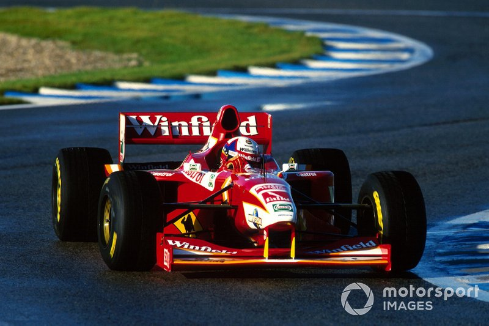
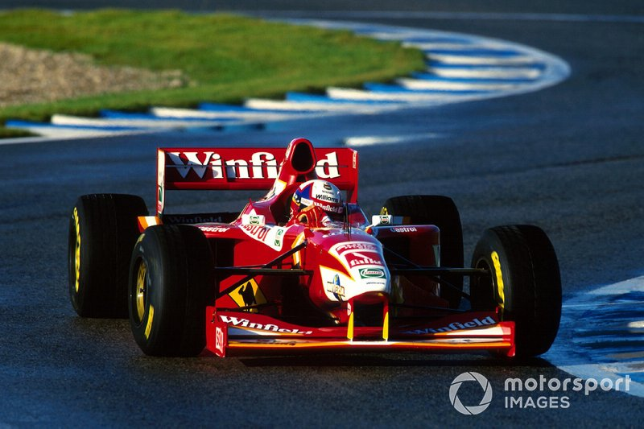

TRAYECTORIA
INDYCAR (CART)
En 1999, después de Williams y Chip Ganassi, se trasladó al otro lado del Atlántico y participó
en la serie CART en los Estados Unidos. En su primer año se coronó brillantemente campeón en un
torneo que se definió en la última carrera tras una reñida temporada con el escocés Dario Franchitti,
mientras Alex Zanardi luchaba en la Fórmula 1 en un Williams que no lograba rendir. Montoya ganó
siete carreras. Las primeras tres las ganó en línea comenzando con Long Beach, Nazareth y Brasil,
luego de la victoria en Cleveland siguió otra seguidilla de tres victorias con Mid-Ohio (donde en
1987 había ganado el también colombiano Roberto Guerrero) y en las pistas de Chicago (propiedad de
Ganassi) y Vancouver. Además logró siete poles, y se consagró como el piloto más joven en ganar esta
categoría a los 24 años de edad y el mejor novato en la historia de la misma. El 30 de septiembre de
1999 Juan Pablo Montoya recibe la Cruz de Boyacá de manos del presidente Andrés Pastrana Arango debido
a sus logros deportivos. El 16 de septiembre de 2013 se confirma que el colombiano regresará a la
IndyCar Series, categoría que no corría desde que compitiera en una fecha del calendario del año 2000,
justamente las 500 millas de Indianápolis, de la cual se alzó con el único triunfo en la serie y en la
máxima competición americana de monoplazas en ese entonces, y que alternó en ese mismo año con la
desaparecida CART World Series, y en la cual compitió con su ahora antiguo equipo Chip Ganassi Racing.
Para la Temporada 2014 correrá con el equipo Penske Racing a contrato de 1 año con opción de prórroga.
De igual manera se conoció que podría correr algunas carreras de la NASCAR con este equipo.21 Hizo su
primer test con el equipo a finales de noviembre. Comenzó 2015 en la IndyCar de la mejor forma posible,
ganando en San Petersburgo. Posteriormente, volvió a ganar las 500 Millas de Indianápolis, pese a que un
toque en las primeras vueltas lo había relegado a las últimas posiciones. En total, logró cinco podios y
nueve top 5, para finalizar empatado en la puntuación con Scott Dixon, pero esta vez el bogotano perdió el
título en el desempate ante las tres victorias del neozelandés. En 2016, Montoya volvió a iniciar la temporada
llevándose la victoria en San Petersburgo. Sin embargo, eso fue un espejismo, puesto que solo subiría al
podio en otras dos ocasiones, ambas en 3.ª posición, y acabó en un discreto 8.º puesto en la general.
FORMULA 1
En el año 2001, tras su paso por los Estados Unidos, Montoya regresó al equipo Williams, pero
esta vez no como piloto de pruebas, sino como piloto titular en Williams. En su primera
temporada fue el Novato del año, obteniendo una victoria (Gran Premio de Italia en Monza) y
tres poles. Durante las temporadas 2002 y 2003, Juan Pablo se reveló como un piloto muy veloz y
atrevido, erigiéndose a alternativa real en la lucha por el Campeonato del Mundo contra el
intratable Michael Schumacher, aunque quedando tercero en la clasificación final en ambos años.
Para el 2005, Montoya se integró por dos temporadas en el equipo McLaren-Mercedes en compañía del
finlandés Kimi Räikkönen. Tras algunos altercados, como en las prácticas del Gran Premio de Mónaco
de 2005, en las que Montoya fue penalizado por provocar un accidente; y en el Gran Premio de Canadá
de 2005, en el que fue descalificado de la carrera tras salir de boxes con el semáforo en rojo durante
el periodo del coche de seguridad; Juan Pablo consiguió su primera victoria con McLaren en el Gran
Premio de Gran Bretaña de 2005 tras una intensa lucha con Fernando Alonso. Consiguió ganar dos carreras
más ese año (Italia y Brasil), aunque se debe destacar que en Monza obtuvo el récord que aún está vigente
de la mayor velocidad alcanzada en ese circuito en toda su historia (372,6 km/h), los problemas de
fiabilidad y algunos errores hicieron que su equipo no pudo alzarse con ninguno de los dos títulos.
NASCAR
2006 fue el año en que culminó su carrera en la Fórmula 1, para dar paso a una nueva etapa en
su trayectoria, esta vez en la categoría NASCAR de los Estados Unidos, conformando parte del
equipo de su antiguo jefe de la CART, Chip Ganassi,poniéndose al comando del Dodge Charger
número 30. A finales de este año, inició su período de adaptación a la NASCAR, empezando en la
Busch Series (la segunda en importancia en la NASCAR detrás de la Copa NASCAR) en la que
compitió en tres ocasiones (un retiro). Luego, en ese mismo año 2006, hizo una aparición más,
pero esta vez, en la Copa NASCAR, en la cual, no pudo culminar. La temporada 2007 encontró a Juan
Pablo Montoya nuevamente en el ámbito NASCAR, pero en esta ocasión siendo contratado para todo el
campeonato por el equipo de Chip Ganassi, siempre al comando del Dodge Charger. Su llegada al
equipo como piloto de tiempo completo, suspuso también su debut absoluto, por lo que fue catalogado
como "rookie". El equipo de Chip Ganassi quiere ser más competitivo, por lo que realiza una fusión
con el de Teresa Earnhardt, Dale Earnhardt Inc., y se pasa a llamar Earnhardt Ganassi Racing. La
renovación del equipo supuso también un cambio de marca, por lo cual Montoya pasó de competir con
Dodge a hacerlo al comando de un Chevrolet Impala. Hasta la vigesimoprimera fecha de la NASCAR
Sprint Cup, Juan Pablo Montoya ya se encuentra en la posición n.º 8, clasificando a la ronda final
del campeonato, conocida como "Chase for the Sprint Cup". La campaña 2009 de Montoya en la NASCAR
Sprint Cup, ha sido la mejor desde que llegó a esta categoría, obteniendo un top 5, diez top 10, una
pole, con un total de 2631 puntos a 557 del líder, Tony Stewart. Estadísticamente queda para la
historia que Montoya es el único piloto que ha liderado vueltas en las tres grandes carreras de
automóviles que se han corrido en el óvalo de Indianápolis. Lideró camino de su triunfo en las 500
Millas en 2000, lideró en 2001 en su Williams en el Gran Premio de los Estados Unidos de Fórmula 1 y
el 26 de julio de 2009 punteó 116 vueltas de las 160 pactadas.
 
